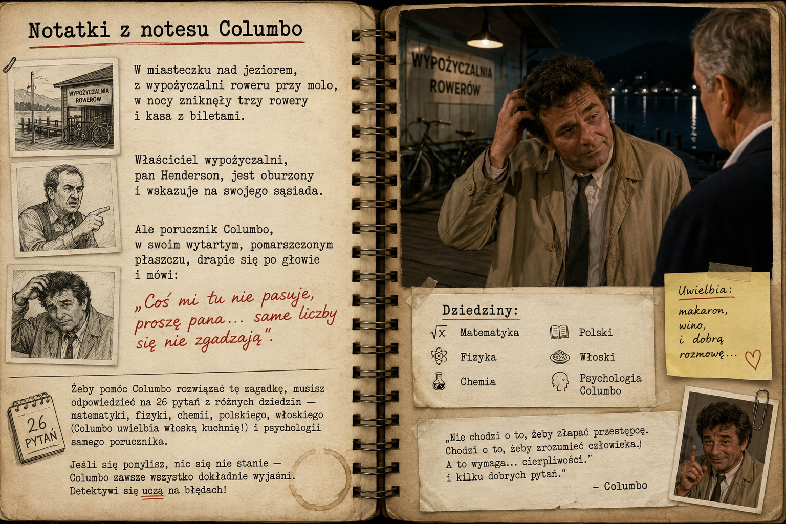

Fot. z akt sprawy — wypożyczalnia rowerów przy molo
W miasteczku nad jeziorem, z wypożyczalni roweru przy molo, w nocy zniknęły trzy rowery i kasa z biletami. Właściciel wypożyczalni, pan Henderson, jest oburzony i wskazuje na swojego sąsiada. Ale porucznik Columbo, w swoim wytartym, pomarszczonym płaszczu, drapie się po głowie i mówi: „Coś mi tu nie pasuje, proszę pana... same liczby się nie zgadzają”.
Żeby pomóc Columbo rozwiązać tę zagadkę, musisz odpowiedzieć na 26 pytań z różnych dziedzin — matematyki, fizyki, chemii, polskiego, włoskiego i psychologii samego porucznika. Jeśli się pomylisz, nic się nie stanie — Columbo zawsze wszystko dokładnie wyjaśni.